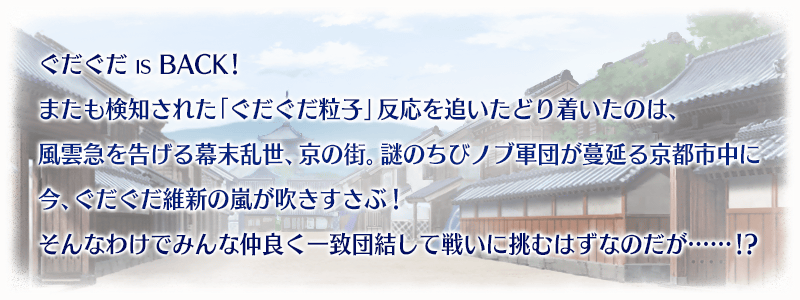

◆活動舉辦期間◆
2018年5月18日(五) 17:00～5月30日(三) 11:59
◆活動概要◆
舉辦期間限定活動「復刻:GUDAGUDA明治維新 輕量版」！
推進主線關卡至最後，讓活動限定Servant「★4(SR)茶茶」加入吧！
本活動會發生分成2方勢力競爭的「勢力戰」。
「勢力戰」為所有Master「新選組點數」「織田幕府點數」哪邊收集更多來決定勝敗。
在「勢力戰」角逐收集點數，取得茶茶専用再臨素材「蘭奢待」和茶茶的寶具等級提升必要活動専用道具「日輪扇子」等豪華報酬吧！
※本活動為再調整2017年舉辦的期間限定活動「GUDAGUDA明治維新」更容易遊玩的「復刻輕量版活動」。
※在上次舉辦時獲得過「聖杯」的情況，於輕量版復刻活動會以「傳承結晶」代替「聖杯」做為通過報酬。
◆活動參加條件◆
只限通過「特異點F 炎上汙染都市 冬木」的Master才能參加
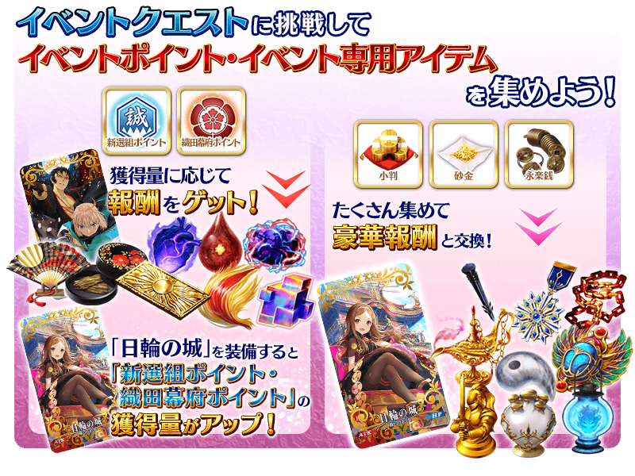
本活動中，隨著主線關卡進行，會發生分成2方勢力競爭的「勢力戰」。
選擇「新選組點數」「織田幕府點數」各自收集關卡，收集點數。
「勢力戰」的勝敗由所有Master收集更多哪邊的點數來決定。
勝敗決定後，除了參加該勢力戰的Master全員可獲得勝利勢力的點數獎勵報酬外，「決勝戰」及一部份主線關卡的故事內容會有所變化。
※根據活動参加時機的不同，會有勢力戰不出現的情況。
在該情況並不會影響主線關卡的進行。
※獎勵報酬在通過「決勝戰」時直接賦予至禮物箱。
※在禮物箱領取獎勵點數後才會反應到勝利勢力的點數。若一直放在禮物箱，不會反應到點數。
※各「勢力戰」的獎勵報酬的領取條件為通過一次以上該回「勢力戰」的「任何「勢力戰」關卡。只通過「決勝戰」關卡的話無法領取報酬。
※活動道具交換期間結束後，獎勵點數將會消失。
※活動限定概念禮裝「日輪の城」的效果，不會反應在可在参加勢力戰所入手的勝利勢力點數報酬。
※關於另一方的勢力勝利情況的故事，也能藉由主線關卡進行在活動期間結束後於「圖鑑(マテリアル)」確認。
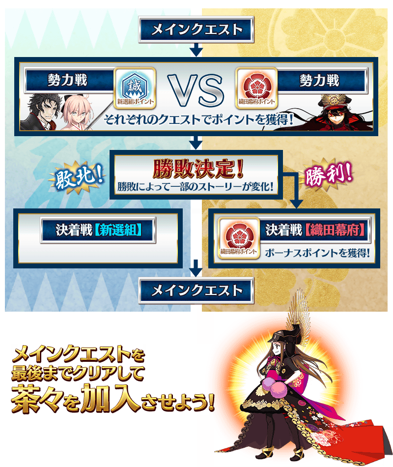
◆勢力戰進行時間表◆
「勢力戰」在活動期間中，會配合主線關卡的進行發生3次。
「勢力戰」有舉辦期限，根據期限內所有Master收集最多的點數的點數來決定勝敗。
| 勢力戰 | 舉辦期間 |
|---|---|
| 第1戰 | 5月18日(五) 17:00～5月19日(六) 16:59 |
| 第2戰 | 5月19日(六) 17:00～5月20日(日) 16:59 |
| 第3戰 | 5月20日(日) 17:00～ |
※各舉辦期限結束後也能挑戰「決勝戰」。
※第3戰結束後，通過主線關卡至最後的話，接著會開放可獲得「新選組點數」「織田幕府點數」的自由關卡。
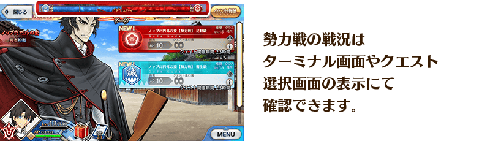
◆報酬獲得方法◆
活動點數的獲得量到達一定量的話，可獲得對應獲得量的達成報酬。
達成報酬可於「活動點數報酬」確認。
※活動點數的獲得量是計算在活動關卡掉落所獲得的「新選組點數」及「織田幕府點數」。
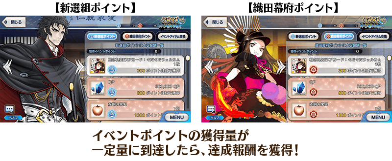
◆能用新選組點數獲得的道具◆
|
【活動限定概念禮裝】 【活動道具】 【技能強化＆靈基再臨素材】 【其他道具】 |
◆能用織田幕府點數獲得的道具◆
|
【活動限定概念禮裝】 【活動限定靈基再臨素材】 【技能強化＆靈基再臨素材】 【其他道具】 |
◆超值攻略方法・其1◆
對象Servant在期間限定活動「復刻:GUDAGUDA明治維新 輕量版」的活動關卡中會提升自身的攻擊威力！
強化對象Servant，挑戰活動吧！
※各Servant的增加量有所差異。
【對象Servant】
| 職階 | 稀有度 | Servant名 |
|---|---|---|
| Saber | ★★★★★ | 沖田總司 |
| Archer | ★★★★★ | 尼古拉・特斯拉 |
| ★★★★ | Emiya | |
| ★★★★ | 織田信長 | |
| Lancer | ★★★ | 庫・夫林 |
| Rider | ★★★ | 美杜莎 |
| ★★ | 愛德華・蒂奇 | |
| Caster | ★★★★ | 海倫娜・布拉瓦茨基 |
| ★★★★ | 湯瑪斯・愛迪生 | |
| ★★★ | 美狄亞 | |
| Assassin | ★★★★★ | 謎之女主角Ｘ |
| Berserker | ★★★★★ | 謎之女主角Ｘ〔Alter〕 |
| ★★★★★ | 土方歲三 | |
| ★★★★ | 茶茶 |
◆超值攻略方法・其2◆
裝備可在活動道具交換入手的活動限定概念禮裝「日輪の城」的話，會提升在期間限定活動「復刻:GUDAGUDA明治維新 輕量版」的活動關卡中「新選組點數」「織田幕府點數」的掉落獲得量。
另外，裝備可在「新選組點數」「織田幕府點數」的點數報酬獲得的活動限定概念禮裝「壬生狼」的話，會提升期間限定活動「復刻:GUDAGUDA明治維新 輕量版」中我方全體<含候補>的攻擊威力。
※請注意各關卡的道具掉落率並非100％。
◆超值攻略方法・其3◆
裝備在聖晶石召喚Pick Up的期間限定概念禮裝「第六天魔王」「春風遊歩道」「社交界の華」的話，會提升在期間限定活動「復刻:GUDAGUDA明治維新 輕量版」中活動専用道具「小判」「砂金」「永樂錢」的掉落獲得數。
※請注意各關卡的道具掉落率並非100％。
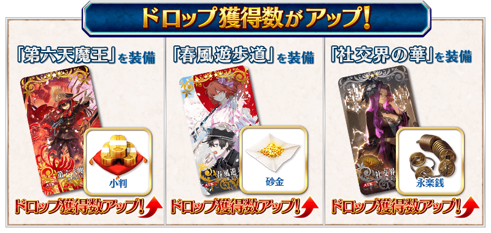
|
★★★★★SSR |
| 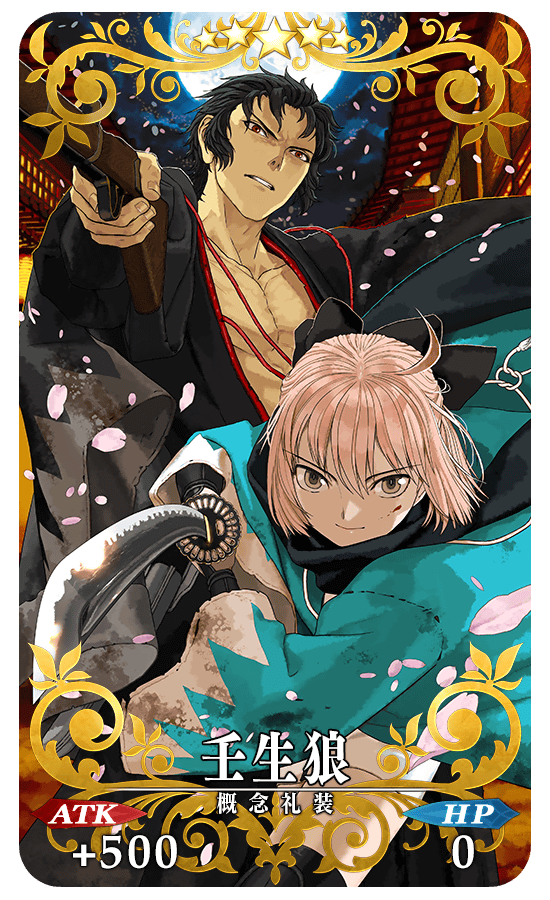 |
★★★★★SSR |
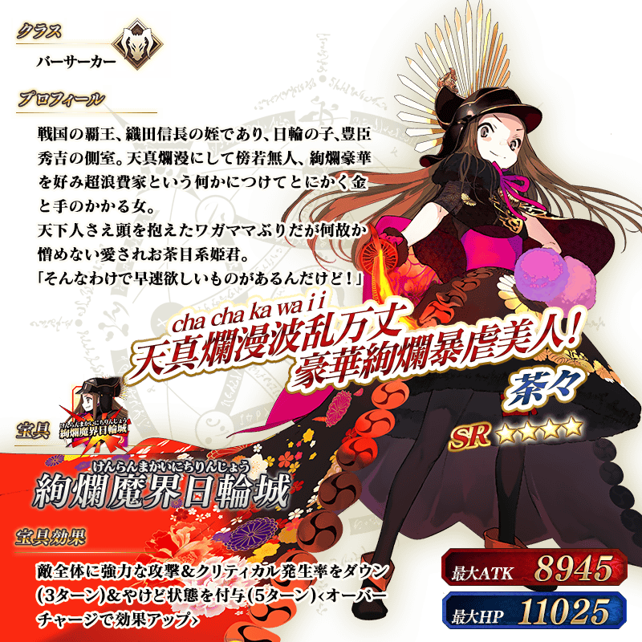
◆靈基再臨◆
使用在活動期間中「織田幕府點數」的點數報酬外無法入手的「蘭奢待」的話，重複4次靈基再臨的話，卡面會有所變化！
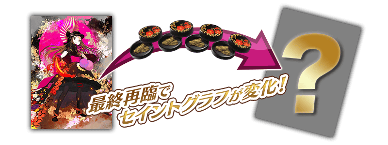
※茶茶不會隨靈基再臨使戰鬥角色的外觀變化。
◆拿到活動限定概念禮裝經驗值卡「ぐだぐだ明治維新」「ぐだぐだウェルカム」吧！◆
做為「新選組點數」「織田幕府點數」的達成報酬，可大幅強化概念禮裝的EXP卡登場！ |
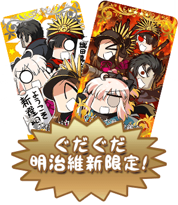 |
介紹茶茶的寶具演出！
在「Fate/Grand Order」官方網站內的公告中，公開了「★4(SR)茶茶」的寶具演出。敬請確認。
◆交換方法◆
交換期間:5月18日(五) 17:00～6月6日(三) 11:59
※交換期間結束後「日輪扇子」「小判」「砂金」「永樂錢」會消失。
活動専用道具可自點擊管理室(ターミナル)畫面右上「活動報酬」的「活動道具交換」畫面，交換以下的道具。
◆能用日輪扇子交換的道具◆
|
【活動限定Servant】 |
◆能用小判交換的道具◆
|
【活動限定概念禮裝】 【技能強化＆靈基再臨素材】 【靈基再臨素材】 【其他道具】 |
◆能用砂金交換的道具◆
 |
【活動限定概念禮裝】 【技能強化＆靈基再臨素材】 【靈基再臨素材】 【其他道具】 |
◆能用永樂錢交換的道具◆
| 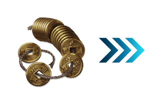 |
【活動限定概念禮裝】 【技能強化＆靈基再臨素材】 【其他道具】 |
以通過「復刻:GUDAGUDA明治維新 輕量版」主線關卡的Master做為對象開放高難易度「挑戰關卡」。
「挑戰關卡」就算通過後也不會消失，能無數次挑戰，可以變更Servant和概念禮裝的組合後再次挑戰。
※關卡通過報酬、戰利品、Master經驗值、魔術禮裝經驗值、絆點數只可在初次通過時獲得。
◆挑戰關卡參加條件◆
只限通過「復刻:GUDAGUDA明治維新 輕量版」的「勢力戰」第3戰結束後主線關卡的Master才能參加
※關於本次的挑戰關卡，由於與在2017年舉辦期間限定活動「GUDAGUDA明治維新」同様內容的緣故，參加條件不用「通過終局特異點」，與當時同樣的條件。
◆挑戰關卡初次通過報酬◆
呼符 1張
◆「復刻 GUDAGUDA明治維新Pick Up召喚(每日交替)」期間◆
期間:2018年5月18日(五) 17:00～6月1日(五) 11:59
舉辦期間限定「復刻 GUDAGUDA明治維新Pick Up召喚(每日交替)」！
「★5(SSR)土方歲三」以期間限定登場！
變更在2017年舉辦的「GUDAGUDA明治維新Pick Up召喚」一部份內容進行復刻。
本次包含上述，Pick Up7位的Servant！
「★4(SR)Emiya(Archer)」「★4(SR)海倫娜・布拉瓦茨基(Caster)」「★4(SR)湯瑪斯・愛迪生」以每日交替Pick Up，「★5(SSR)土方歲三」「★3(R)庫・夫林(Lancer)」「★3(R)美杜莎(Rider)」「★3(R)美狄亞」常駐Pick Up！
※土方歲三在Pick Up期間結束後不會追加到故事召喚。
※Emiya(Archer)、海倫娜・布拉瓦茨基(Caster)、湯瑪斯・愛迪生、庫・夫林(Lancer)、美杜莎(Rider)、美狄亞在Pick Up期間結束後仍會在故事召喚被抽出。
※Pick Up期間中，湯瑪斯・愛迪生就算通過第五特異點前也能入手。
詳情請在聖晶石召喚畫面左下的召喚詳細確認。
裝備期間限定概念禮裝「★5(SSR)第六天魔王」「★4(SR)春風遊歩道」「★3(R)社交界の華」的話，會提升期間限定活動「復刻:GUDAGUDA明治維新 輕量版」中活動専用道具的掉落獲得數。
※「★3(R)社交界の華」在Pick Up期間中，也能在友情點數召喚獲得。
※請注意自友情點數召喚抽出「★3(R)社交界の華」在自動變還設定登錄★3(R)概念禮裝的情況，會變成自動變還的對象。
Pick Up期間中，期間限定Servant、Pick Up Servant、期間限定概念禮裝的出現機率提升！
10次召喚中確定1張★4(SR)以上和確定1位★3(R)以上的Servant！
※確定★4(SR)以上包含Servant和概念禮裝。
| 每日交替Pick Up期間 | 每日交替Pick Up內容 |
|---|---|
| 5月18日(五) 17:00～ 5月20日(日) 22:59 |
土方歲三 Emiya(Archer) 海倫娜・布拉瓦茨基(Caster) 湯瑪斯・愛迪生 |
| 5月20日(日) 23:00～5月21日(一) 22:59 | 土方歲三 湯瑪斯・愛迪生 |
| 5月21日(一) 23:00～5月22日(二) 22:59 | 土方歲三 海倫娜・布拉瓦茨基(Caster) |
| 5月22日(二) 23:00～5月23日(三) 22:59 | 土方歲三 Emiya(Archer) |
| 5月23日(三) 23:00～ 5月26日(六) 22:59 |
土方歲三 Emiya(Archer) 海倫娜・布拉瓦茨基(Caster) 湯瑪斯・愛迪生 |
| 5月26日(六) 23:00～5月27日(日) 22:59 | 土方歲三 湯瑪斯・愛迪生 |
| 5月27日(日) 23:00～5月28日(一) 22:59 | 土方歲三 海倫娜・布拉瓦茨基(Caster) |
| 5月28日(一) 23:00～5月29日(二) 22:59 | 土方歲三 Emiya(Archer) |
| 5月29日(二) 23:00～ 6月1日(五) 11:59 |
土方歲三 Emiya(Archer) 海倫娜・布拉瓦茨基(Caster) 湯瑪斯・愛迪生 |
※請注意會以每日交替變更Pick Up的Servant。

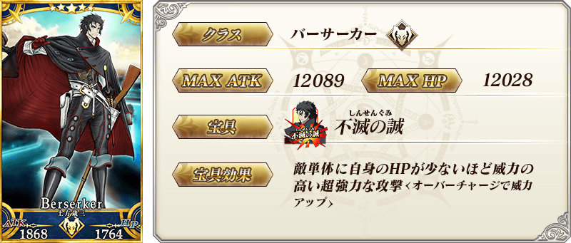

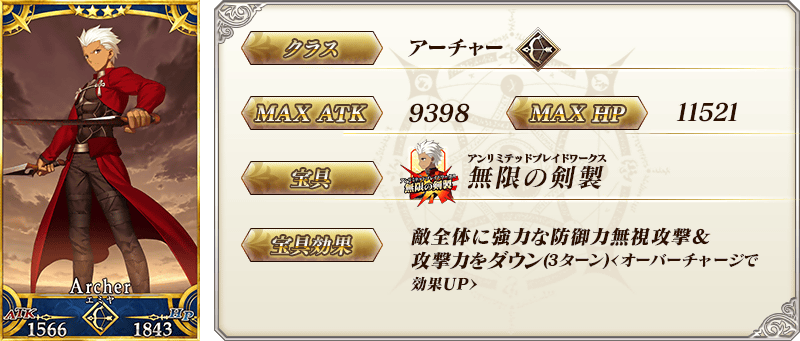
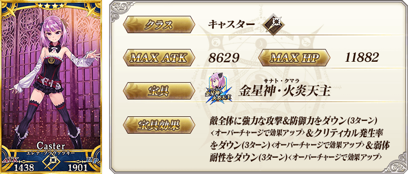

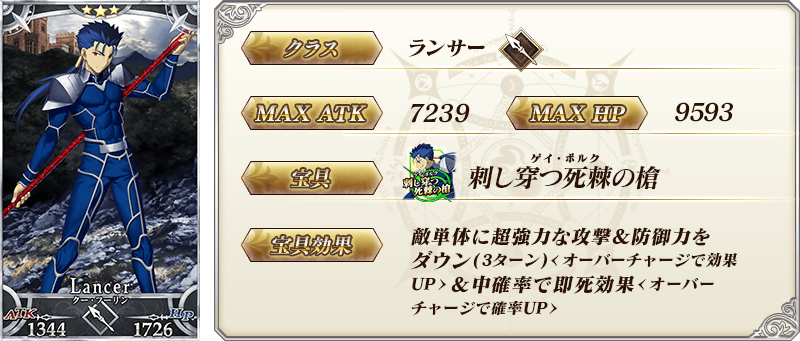


| 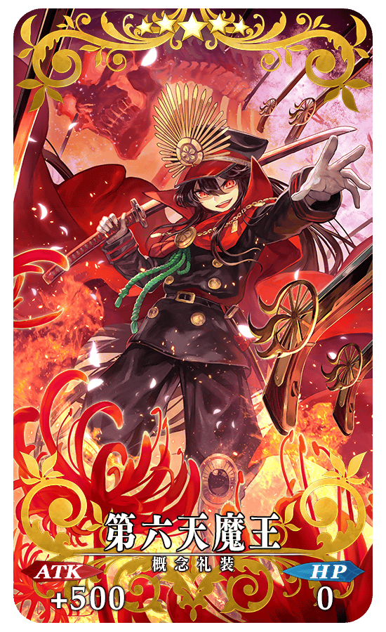 |
★★★★★SSR |
| 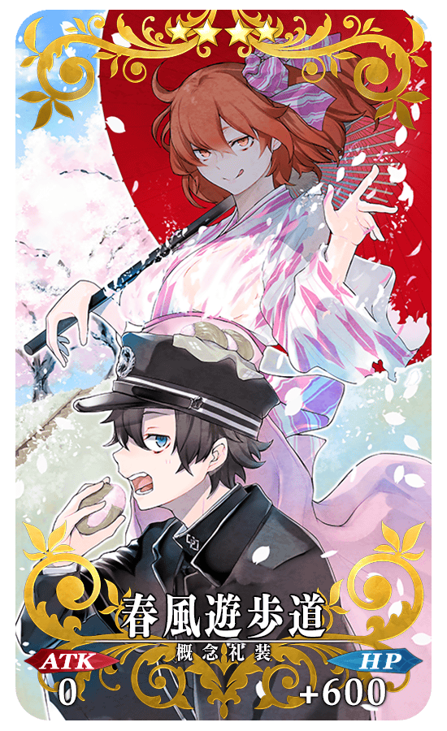 |
★★★★SR |
 |
★★★R |
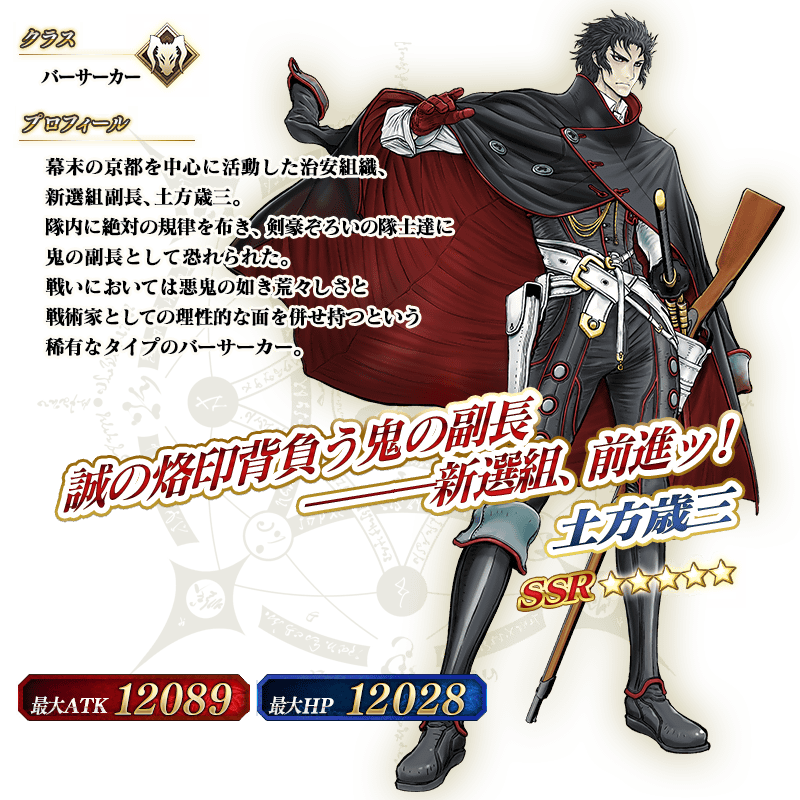
介紹土方歲三的寶具演出！
在「Fate/Grand Order」官方網站內的公告中，公開了「★5(SSR)土方歲三」的寶具演出。敬請確認。